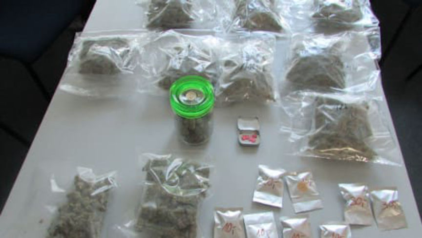
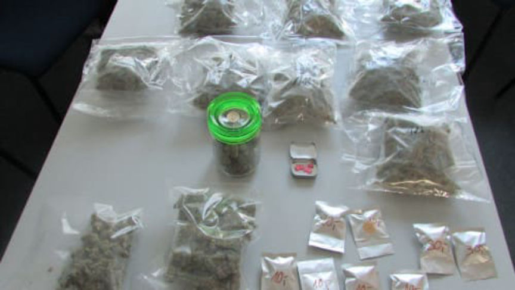

Bavarian Man Allegedly Resold Marijuana from the Darkweb
Law enforcement in Bavaria arrested a 27-year-old man from Deggendorf for ordering large quantities of drugs on the darkweb and reselling them to local customers. During the execution of a search warrant at the suspect’s apartment, authorities seized close to one kilogram of marijuana, cocaine, and ecstasy.
According to an announcement by the Deggendorf Criminal Police (archivecaslytosk.onion/fPKS1), the investigation into the suspect began after law enforcement had intercepted several packages of drugs addressed to the 27-year-old’s apartment. The drug packages contained significant quantities of marijuana, cocaine, and ecstasy. The seized packages were used as grounds for a warrant allowing the search of the suspect’s apartment.
On January 9, authorities executed said search warrant. During the search, the investigators found and seized close to one kilogram of marijuana, cocaine, and ecstasy. The suspect had reportedly prepared the drugs for resale in a large number of plastic bags. Authorities also seized thousands of euros as the profits of the alleged drug trafficking operation. The evidence seized at the apartment gave the authorities enough evidence to temporarily detain the suspect.
Authorities later secured an arrest warrant. On January 10, a judge at the Deggendorf District Court ordered the detention of the suspect.
According to an announcement by the Deggendorf Criminal Police (archivecaslytosk.onion/fPKS1), the investigation into the suspect began after law enforcement had intercepted several packages of drugs addressed to the 27-year-old’s apartment. The drug packages contained significant quantities of marijuana, cocaine, and ecstasy. The seized packages were used as grounds for a warrant allowing the search of the suspect’s apartment.
Packages of marijuana seized during the search
On January 9, authorities executed said search warrant. During the search, the investigators found and seized close to one kilogram of marijuana, cocaine, and ecstasy. The suspect had reportedly prepared the drugs for resale in a large number of plastic bags. Authorities also seized thousands of euros as the profits of the alleged drug trafficking operation. The evidence seized at the apartment gave the authorities enough evidence to temporarily detain the suspect.
Authorities later secured an arrest warrant. On January 10, a judge at the Deggendorf District Court ordered the detention of the suspect.